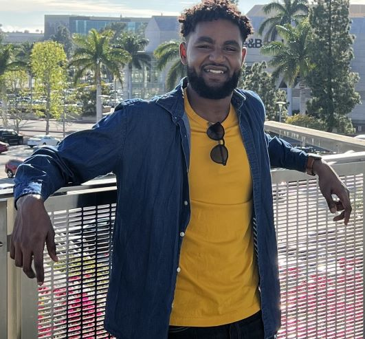

Ahmed M. AhmedHi there! I'm currently a Master's student in CS at the Stanford AI Lab where I'm fortunate to be advised by Chelsea Finn and supported by a NSF Graduate Research Fellowship . I was also an undergraduate at Stanford, majoring in Mathematical and Computational Science with a minor in African & African American Studies. I'm incredibly fortunate to have spent time at the Robot Learning Group in MSR Redmond under Andrey Kolobov and to have been advised by Mykel Kochenderfer for my honor's thesis.
GitHub / Google Scholar / Twitter / |
 |
ResearchI am broadly interested in applying deep reinforcement learning, imitation learning, and meta-learning towards developing intelligent behavior in robotics and decision-making agents. To this end I'm actively applying to PhD programs in Fall 2022! |

|
Cross-Trajectory Representation Learning for Zero-Shot Generalization in RLBogdan Mazoure, Ahmed M. Ahmed, Patrick MacAlpine, R Devon Hjelm, Andrey Kolobov International Conference on Learning Representations (ICLR), 2022 arxiv / code / poster / We propose Cross-Trajectory Representation Learning (CTRL) a novel self-supervised learning objective that maintains a set of trajectories embeddings representative of different behaviors onto which we can project any given trajectory from the transition dynamics. This allows CTRL to avoid overfitting to rewards in the encoder and improved generalization on the challenging Procgen Benchmark compared to prior work. We also show a connection to psuedo-bisimulation metrics in Reinforcement Learning. |

|
Ahmed M. Ahmed, James Harrison, Chelsea Finn Black in AI NeurIPS Workshop, 2021 paper / code / workshop / Devised a novel approach for hierarchical imitation learning through bayesian meta-learning algorithms. The goal is to learn a multi-skill policy from expert demonstrations which are segmented through a adapted changepoint detection scheme. Selected for an oral presentation at the Black in AI workshop and best theoretical course project for Stanford's CS 236: Deep Generative Models |
OutreachOutside of my research, I'm passionate about addressing issues of diversity and inclusion in academia at large. To this end I've worked on improving outreach and inclusion in CS research through my work as mentor CURIS, the Stanford CS department's REU program. I helped spearhead initatives such as the CURIS fellows program, aimed to provide research opportunities for historically underrepresented students and PURE which provides research funding for First-Generation/Low-Income students. |
|
Design and source code from Jon Barron's website, with the Jekyll template from Leonid Keselman's website |